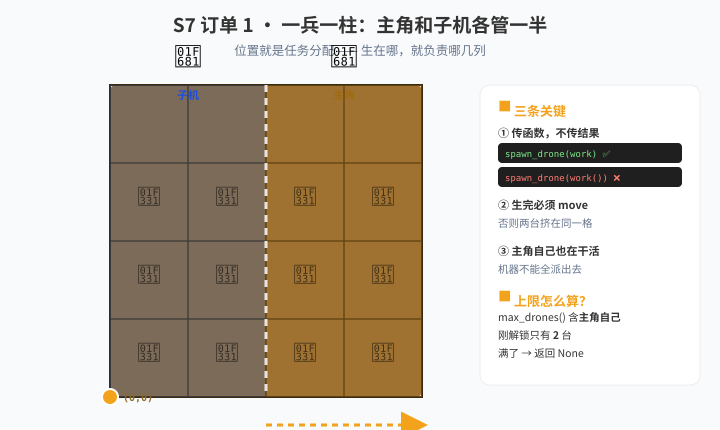

⚠️ 先说清楚这一关的前提这一关需要你先在科技树里解锁 巨型农场（Megafarm）——这是唯一能多台无人机同时干活的科技。
刚解锁时你只有 2 台无人机（含主角自己），也就是只能再派出 1 台。
所以这一关的全部订单都按"两台机器"来设计——学会怎么把活切成两半，比开多少台机器都重要。
🎮 游戏进度 · 课前准备
📌 课前在游戏里做这些事
- 解锁 巨型农场（Megafarm）——这是唯一能多台无人机同时干活的科技。
- 在游戏里点开"巨型农场"，看看你的无人机上限（
max_drones()）是多少——刚解锁是 2，之后每级 +1。 - 试着手动生一台无人机：在游戏自带的代码框里写
spawn_drone(harvest)，观察它生出来在哪、怎么干活。 - 留意一个现象：两台无人机不会撞在一起，也不会互相干扰。
📖 知识卡 · 5 张
① 函数本身是个值：传函数，不要传调用结果
Python 里函数可以像数字一样存起来、传来传去。这是多无人机的全部魔法所在。
def work():
move(North)
f = work # 把"函数本身"存进变量（不加括号）
f() # 现在才真正执行
spawn_drone(work) # ✅ 对：把函数交出去，让新无人机去执行
spawn_drone(work()) # ❌ 错：括号让它立刻执行了，交出去的是返回值本关第一大坑。spawn_drone(f) 交的是"怎么做"，spawn_drone(f()) 交的是"做完的结果"。前者是老板派活，后者是老板自己干了活再派个空任务。
② spawn_drone：生一台无人机
h = spawn_drone(work) # 生一台，它去跑 work
if h == None:
... # 没生出来（到上限了）
num_drones() # 现在有几台活着（含主角自己）
max_drones() # 最多能活几台两条铁律：
① spawn_drone 返回 None 表示已经到上限了——主角自己也占一个名额。刚解锁时上限是 2，也就是只能再派出 1 台。
② 每生一台就 move(East) 走开，否则所有无人机挤在同一个格。
③ 参数：把任务"发"给子无人机
spawn_drone 后面可以继续跟参数，它们会被复制一份交给新无人机。
def work_cols(start, end):
"""负责第 start 到 end-1 列"""
for i in range(end - start):
if can_harvest():
harvest()
move(North)
spawn_drone(work_cols, 0, 2) # 子机负责第 0、1 列
spawn_drone(work_cols, 2, 4) # 另一台负责第 2、3 列同一份代码，靠参数干不同的活——这是 S4 的函数知识在多无人机场景下的直接回报。
你现在只有 2 台，所以一次只能派出一台；但切分的思路和台数无关，以后升级了照样用得上。
④ wait_for：唯一的回信方式
handles = []
h = spawn_drone(solve)
if h:
handles.append(h)
for x in handles:
gold = wait_for(x) # 等它干完，返回它的 return 值
quick_print("这台赚了", gold)
has_finished(x) # 不阻塞地问一句：干完了吗？wait_for 有两个作用：① 等它结束（大家一起干完再进下一阶段）；② 拿到它 return 的值——这是子无人机唯一能把结果告诉你的途径。
⑤ 最重要的机制：它们不共享变量
# 主角的列表
my_list = []
def child():
my_list.append(1) # 改的是"子无人机自己的" my_list
spawn_drone(child)
# 主角的 my_list 依然是空的！每台无人机是一台独立的电脑，各有各的变量副本。它们看不见彼此（除了 wait_for）。
所以不需要"锁"，但想要结果就必须显式传回来。
📌 这一关真正的思维转变真多线程里，大家共享一份数据，要小心"抢"（竞态条件），所以要加锁。
这个游戏里不用锁——因为根本没有共享。
但代价是：沟通变难了。想要结果，只能靠 return + wait_for 明确设计一条"回信的路"。
🚜 农场订单 · 闯关任务
一兵一柱：主角和子机各管一半
关键：谁负责哪几列，是靠"出生在哪"决定的——所以生完一台必须马上走开。

最常见的错：写 spawn_drone(work())——这样你自己把活干了，新生出来的是台空机器。
开满为止：学会看返回值
spawn_drone 返回 None）那部分主角自己干。
你现在上限是 2，所以只有第 1 台能派出去，第 2 台就派不成了——正好用来体会"满了会返回 None"。
if h: 是 Python 判断"不是 None"的简洁写法——空的列表、0、False 都不算数，只有 None 会被当成失败。
分阶段干活：等对方到齐
所以要分两个阶段：阶段一，主角和子机各去种自己那几列；阶段二，主角等子机种完，再统一进"查烂格 → 补种 → 收"。
这才是"同步"的真正意思——不是"同时跑"，而是"等对方到齐再继续"。多无人机的价值一半在这里：干活是并行的，但阶段必须对齐。
切块并行：两种切法做个对比
- 方式 A · 切竖条：一台管左半边几列，一台管右半边几列。
- 方式 B · 切方块：一台管左上半区，一台管右下半区。
这一关的核心是对比实验——学生亲眼看到"任务切分"的收益。切分粒度（每台干多少）是设计决策，不是唯一答案。
两台无人机各解一座小迷宫
每台解完把自己赚到的金币数 return 回去，主角用
wait_for 把战果加起来。
这才是多无人机最漂亮的用法——官方也专门建议"多个小任务，胜过一个大任务"。同样收 2 座迷宫，4×4 的墙比 8×8 少得多，走起来快得多。
注意：迷宫的边长由你用的奇怪物质数量决定——想让它小一点，就少放材料。
还有：一座迷宫要用一整块地方，两座迷宫不能叠在一起——要让它们分别长在田的两个角落。
🔧 常见报错 · 卡住了先看这里
新无人机什么都不干 → 写成了 spawn_drone(work())。去掉括号，交函数本身。
所有无人机挤在一格 → 生完一台忘了 move。每生一台就往东走一格。
生不出第二台 → 这是正常的！max_drones() 刚解锁只有 2（含主角自己），所以只能派出 1 台。要升级巨型农场才有更多。
子无人机的结果拿不到 → 必须靠 wait_for(h) 取它的 return 值。直接读变量读不到——变量不共享。
wait_for 卡住不动 → 子无人机永远不会结束（函数里是 while True）。wait_for 要等函数 return 才返回。
子无人机干的活没效果 → 它得自己也种。别让子函数只 move 不 plant。
不同无人机抢同一格 → 任务重叠了。重新设计切分方式，保证每格只归一台管。
两台无人机抢同一座迷宫 → 一座迷宫要用一整块地方，不能叠。让它们分别长在田的两个角落。
🚪 自查门
🧠 换需求测试 · 真会了才过
- 换切分粒度：每台负责 1 列改成 2 列、4 列，代码要改几处？
- 换主作物：把
work_cols里的收割改成种胡萝卜，函数结构要变吗？ - 升级 Megafarm 之后：上限变成 6 台了，你的代码要改吗？为什么？
- 加返回值：让每台无人机
return自己收了多少草，主角怎么加总？ - 口述题：为什么不能"让所有无人机共用一个坏格列表"？用游戏机制来解释，不要用"线程不安全"这种词。
📌 老师注记这一关的价值不在语法，在工程思维：
① 切分——一个大任务怎么拆成互不打架的若干份；
② 分配——用"位置"或"参数"把活派下去；
③ 同步——并行干活，但阶段要对齐。
这三条出了游戏照样有用，而且比真多线程简单得多（不用管锁）。
只有 2 台机器反而是好事：学生不用纠结调度，被迫把"切分"这件事想明白。等他们升级了 Megafarm，切分思路直接复用。
如果学生 S5/S6 还没过关，可以先跳过这一关——基础不牢时学并发只会更晕。